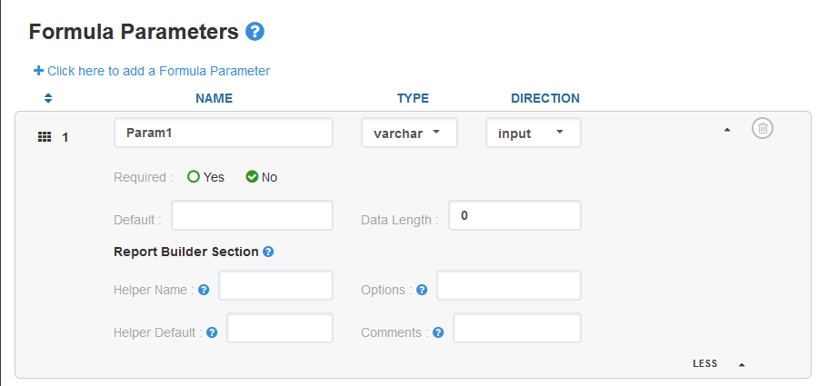
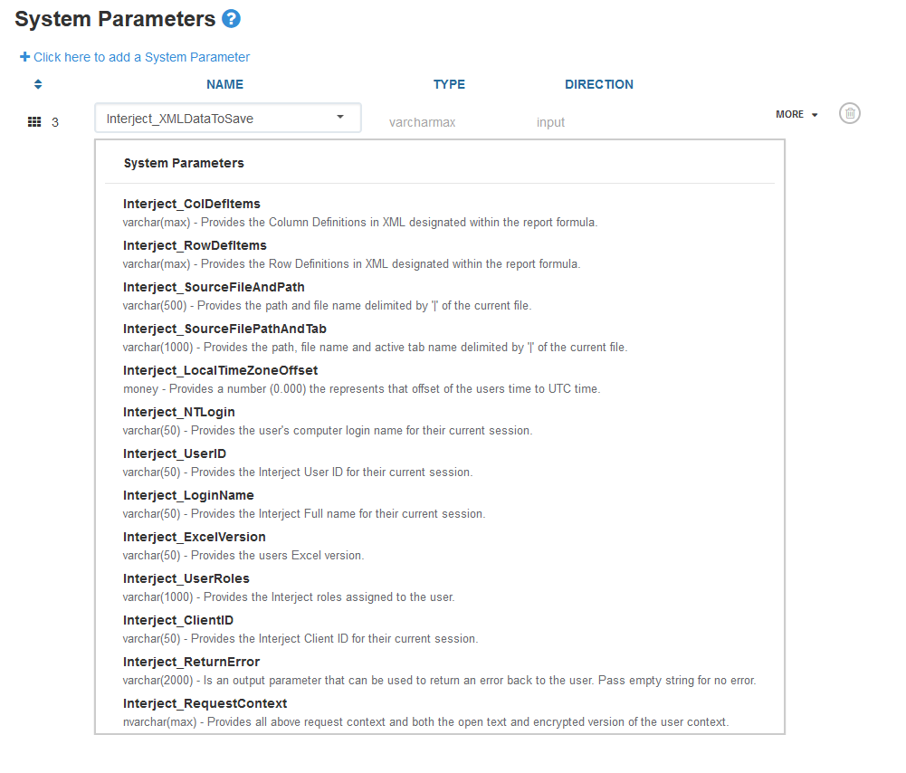

Data Portal Parameters
Data portal parameters allow you to get specific data inputs from the spreadsheet through Interject. There are two types of parameters: Formula and System.
Formula Parameters
Formula parameters are defined and customized by the developers and users of Interject. They must first be set up on the Interject Portal Site.

To use them in the Excel Report, you must define the Parameters parameter in the report function:

Once the report functions are configured to use parameters, the data API code can get the values from those parameters through the InterjectRequest object.
using Interject.Api;
// this request will come from the .NET Framework in the data api
InterjectRequest interjectRequest
// get formula parameter object from request
RequestParameter param = interjectRequest.GetParameter("Param1")
// OR..... get formula parameter values from request
string reportParam1 = interjectRequest.GetParameterValue<string>("Param1");
int reportParam2 = interjectRequest.GetParameterValue<int>("Param2");
float reportParam3 = interjectRequest.GetParameterValue<float>("param3");
System Paramaters
System parameters are defined by Interject but can be included in any Data Portal and will be included in the InterjectRequest.RequestParameterList. Once configured on the Interject Portal Site, they will be passed to the data API or database from Excel and can be parsed out similar to formula parameters.

Below are the system parameters and objects currently handled:
// Currently handled getters for system parameters
InterjectRequestContext requestContext = interjectRequest.GetRequestContext();
String ntLogin = interjectRequest.GetParameterValue<string>("Interject_NTLogin");
String excelVersion = interjectRequest.GetParameterValue<string>("Interject_ExcelVersion");
String returnError = interjectRequest.GetParameterValue<string>("Interject_ReturnError");
float localTimeZoneOffset = interjectRequest.GetParameterValue<float>("Interject_LocalTimeZoneOffset");
String sourceFileAndPath = interjectRequest.GetParameterValue<string>("Interject_SourceFileAndPath");
String sourceFilePathAndTab = interjectRequest.GetParameterValue<string>("Interject_SourceFilePathAndTab");
String userID = interjectRequest.GetParameterValue<string>("Interject_UserID");
String loginName = interjectRequest.GetParameterValue<string>("Interject_LoginName");
String userRoles = interjectRequest.GetParameterValue<string>("Interject_UserRoles");
String clientID = interjectRequest.GetParameterValue<string>("Interject_ClientID");
The system parameter "Interject_RequestContext" will also bring a number of other objects with it that can be queried.
// Currently handled getters for objects in the system parameter "Interject_RequestContext"
IdsTable table = interjectRequest.GetXmlDataToSave();
List<InterjectRowDefItem> rowDefItems = interjectRequest.GetRowDefItems();
List<InterjectColDefItem> colDefItems = interjectRequest.GetColDefItems();
String excelVersion = interjectRequest.GetRequestContext().ExcelVersion;
String userID = interjectRequest.GetRequestContext().UserContext.UserId;
String clientID = interjectRequest.GetRequestContext().UserContext.ClientId;
String loginName = interjectRequest.GetRequestContext().UserContext.LoginName;
String machineLoginName = interjectRequest.GetRequestContext().UserContext.MachineLoginName;
String machineName = interjectRequest.GetRequestContext().UserContext.MachineName;
String fullName = interjectRequest.GetRequestContext().UserContext.FullName;
String loginDateUtc = interjectRequest.GetRequestContext().UserContext.LoginDateUtc;
String userRoles = interjectRequest.GetRequestContext().UserContext.UserRoles;
String idsVersion = interjectRequest.GetRequestContext().IdsVersion;
String fileName = interjectRequest.GetRequestContext().FileName;
String filePath = interjectRequest.GetRequestContext().FilePath;
String tabName = interjectRequest.GetRequestContext().TabName;
String cellRange = interjectRequest.GetRequestContext().CellRange;
String sourceFunction = interjectRequest.GetRequestContext().SourceFunction;
String utcOffset = interjectRequest.GetRequestContext().UtcOffset;